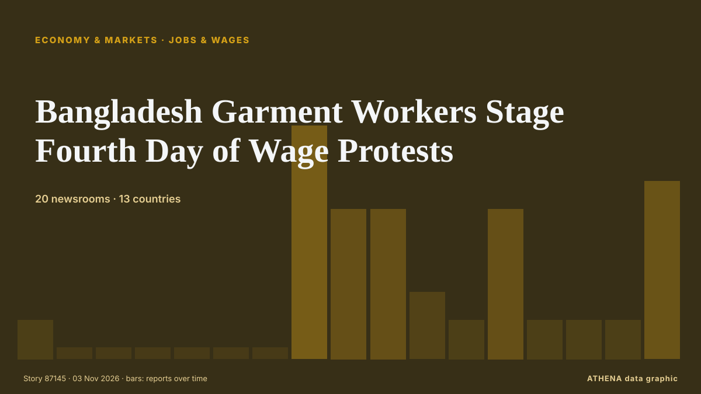

الاقتصاد والمال والأسواق
برعايةبرعاية  Cybernetics and Artificial Intelligence Lab Welcome to the Cybernetics and Artificial Intelligence Laboratory, established at the Department of Business Administration of the National
Cybernetics and Artificial Intelligence Lab Welcome to the Cybernetics and Artificial Intelligence Laboratory, established at the Department of Business Administration of the National
تُعرض العناوين بالإنجليزية كما نُشرت.
مراقب الأسواق - أرقام رسمية
اتجاه المؤشرات الرسمية للأسواق - صعودًا أو هبوطًا أو استقرارًا - مع آخر قيمة رسمية وتاريخها، وأخبار الأسواق التي تحققت منها ATHENA. أرقام رسمية وليست أسعارًا لحظية.
الطاقة
| يوم | أسبوع | شهر | القيمة الرسمية | |
|---|---|---|---|---|
| Brent crude | ▼ | ▲ | ▲ | $123.10/bblبيانات رسمية بتاريخ 27 أكتوبر 2026 |
| WTI crude | ▼ | ▼ | ▲ | $103.37/bblبيانات رسمية بتاريخ 27 أكتوبر 2026 |
| US natural gas (Henry Hub) | ▲ | ▼ | ▼ | حركة غير معتادة $2.76/MMBtuبيانات رسمية بتاريخ 27 أكتوبر 2026 |
| European natural gas (شهر · 3 أشهر · 12 شهرًا)(شهر · 3 أشهر · 12 شهرًا) | ▲ | ▲ | ▲ | $25.49/MMBtuبيانات رسمية بتاريخ 1 سبتمبر 2026 |
| Coal (Australia) (شهر · 3 أشهر · 12 شهرًا)(شهر · 3 أشهر · 12 شهرًا) | ▲ | ▲ | ▲ | $153.84/tبيانات رسمية بتاريخ 1 سبتمبر 2026 |
الغذاء
| شهر | 3 أشهر | 12 شهرًا | القيمة الرسمية | |
|---|---|---|---|---|
| Wheat | ▲ | ▲ | ▲ | $246.85/tبيانات رسمية بتاريخ 1 سبتمبر 2026 |
أسواق الأسهم الأمريكية
| يوم | أسبوع | شهر | القيمة الرسمية | |
|---|---|---|---|---|
| S&P 500 | ▼ | ▼ | ▼ | حركة غير معتادة الاتجاه فقط (المؤشر © Cboe)بيانات رسمية بتاريخ 30 أكتوبر 2026 |
| Nasdaq Composite | ▼ | ▼ | ▼ | الاتجاه فقط (المؤشر © Cboe)بيانات رسمية بتاريخ 2 نوفمبر 2026 |
الفائدة والمخاطر والدولار
| يوم | أسبوع | شهر | القيمة الرسمية | |
|---|---|---|---|---|
| US 10-year Treasury yield | ▼ | ▼ | ▼ | 4.94 %بيانات رسمية بتاريخ 30 أكتوبر 2026 |
| Market volatility (VIX) | ▲ | ▼ | ▲ | الاتجاه فقط (المؤشر © Cboe)بيانات رسمية بتاريخ 30 أكتوبر 2026 |
| US dollar, broad index | ▬ | ▲ | ▲ | 121.67بيانات رسمية بتاريخ 30 أكتوبر 2026 |
اليورو مقابل العملات الأخرى
| يوم | أسبوع | شهر | القيمة الرسمية | |
|---|---|---|---|---|
| EUR/USD | ▲ | ▲ | ▬ | 1.1216 USDبيانات رسمية بتاريخ 2 نوفمبر 2026 |
| EUR/GBP | ▲ | ▼ | ▼ | 0.8358 GBPبيانات رسمية بتاريخ 2 نوفمبر 2026 |
| EUR/CHF | ▬ | ▼ | ▼ | 0.9193 CHFبيانات رسمية بتاريخ 2 نوفمبر 2026 |
| EUR/JPY | ▲ | ▲ | ▬ | 177.10 JPYبيانات رسمية بتاريخ 2 نوفمبر 2026 |
| EUR/CNY | ▲ | ▬ | ▼ | 7.4567 CNYبيانات رسمية بتاريخ 2 نوفمبر 2026 |
| EUR/TRY | ▲ | ▲ | ▲ | 56.044 TRYبيانات رسمية بتاريخ 2 نوفمبر 2026 |
| EUR/NOK | ▲ | ▼ | ▼ | 10.3775 NOKبيانات رسمية بتاريخ 2 نوفمبر 2026 |
المصادر: إدارة معلومات الطاقة الأمريكية (النفط، الغاز الأمريكي)، صندوق النقد الدولي (الغاز الأوروبي، الفحم، القمح)، وزارة الخزانة والاحتياطي الفيدرالي الأمريكيان (عائد السندات لعشر سنوات، مؤشر الدولار) وCboe (VIX), S&P Dow Jones Indices (S&P 500), Nasdaq (Nasdaq Composite)، عبر FRED (الاحتياطي الفيدرالي في سانت لويس)؛ أسعار اليورو المرجعية © البنك المركزي الأوروبي. الأرقام هي آخر القيم الرسمية مع تاريخها، وليست أسعارًا لحظية. تحسب ATHENA الاتجاهات.
العملات المشفّرة وصناديق المؤشرات والأسهم في الأخبار
- Binance clients pull $4.7 billion after hack as crypto world studies fallout الخطر 3.8 3 نوفمبر
- Blackstone’s Gray sees more AI equity fundraising ahead from major tech firms الخطر 0.0 3 نوفمبر
- Russian stock market in the green in early trading hours الخطر 0.0 3 نوفمبر
- Bitcoin price falls below $80,000 again الخطر 1.1 3 نوفمبر
- Apple earnings beat fails to impress Wall Street as tech shares struggle ahead of US midterms الخطر 0.0 3 نوفمبر
- S&P cuts Meta’s outlook to negative الخطر 3.5 3 نوفمبر
- China steps up monetary policy support to bolster stock market الخطر 1.8 3 نوفمبر
- Anthropic Reports $17 Billion Quarterly Revenue Ahead of IPO الخطر 2.1 3 نوفمبر
- Greenback pulls back ahead of US midterms; Bitcoin stabilises after crypto heist الخطر 1.6 3 نوفمبر
- US stocks recover some of last week's sell-off after oil prices fall sharply الخطر 5.1 3 نوفمبر

الوظائف والأجورBangladesh Garment Workers Stage Fourth Day of Wage Protests
Clashes were reported across industrial belts around Dhaka, including Ashulia, Gazipur and the capital's Mirpur area, as workers staged fresh demonstrations and attempted to block major highways. من CNA (Channel NewsAsia)
| 21 أكتوبر | 34 |
|---|---|
| 22 أكتوبر | 82 |
| 23 أكتوبر | 61 |
| 24 أكتوبر | 28 |
| 25 أكتوبر | 29 |
| 26 أكتوبر | 120 |
| 27 أكتوبر | 131 |
| 28 أكتوبر | 128 |
| 29 أكتوبر | 105 |
| 30 أكتوبر | 116 |
| 31 أكتوبر | 26 |
| 1 نوفمبر | 62 |
| 2 نوفمبر | 99 |
| 3 نوفمبر | 10 |
Disney eyes thousands of layoffs, managers asked to cut 20pct in costs
CALIFORNIA: Walt Disney is eyeing thousands of job cuts and is asking some managers to target 20 per cent in annual cost savings, a news agency reported on Monday, citing people familiar with the… من New Straits Times
Australia hikes rates to 18-year high to fight inflation
The Reserve Bank of Australia's decision was in line with expectations from economists polled by Reuters, and marked its fifth rate increase this year. من CNBC World
FG begins N50,000 monthly cash support for poor Nigerians
It warned Nigerians against fraudsters, advising beneficiaries not to disclose their personal identification numbers or Bank Verification Numbers (BVNs) to anyone. من Channels TV
Gold rebounds from one-year low near $3,900
Shafaq News Gold prices bounced on Monday, after a selloff in the previous session, as weaker oil prices tempered inflation concerns, while investors assessed comments from the Federal Reserve for… من Shafaq News (English)
S&P cuts Meta’s outlook to negative
Meta has been given a negative outlook by S&P Global Ratings due to the company's hefty capital expenditures and concerns about free cash flow. من CNBC World
Alphabet launches €6B bond sale in first test of AI debt since selloff
Google’s parent company Alphabet began selling €6bn ($6.7bn) of bonds on Monday. من The Next Web
US stocks recover some of last week's sell-off after oil prices fall sharply
U.S. stocks are climbing Monday after oil prices eased back. من The Korea Times
Billionaire tax divides California Democrats, draws myriad questions
California voters this midterm cycle will decide whether the state will impose a wealth tax on billionaire residents, as wealthy Californians organize against the measure and experts say its… من The Hill
Asian stocks mixed as tech sector struggles to rebound from selloff
Artificial intelligence (AI)-linked firms were hit by another wave of selling as Wall Street giants including Amazon, Alphabet and Microsoft signalled they would keep pouring money into data centres… من CNA (Channel NewsAsia)
Owner of Serbia's Delicenced ALTA Banka Gets Arrested
The Executive Board of the National Bank of Serbia has officially revoked the operating licence of Alta Banka a.d. من N1 Serbia (English)
Palantir reports booming U.S. commercial revenue growth, topping government for first time
Palantir's commercial revenue jumped 148% to $984 million, surpassing government revenue of $953 million. من CNBC World
US ISM Manufacturing PMI improces to 55.5 in October vs. 54.6 expected
Business activity in the United States (US) manufacturing sector expanded at an accelerating pace in October, with the Institute for Supply Management's Manufacturing Purchasing Managers' Index (PMI)… من FXStreet
FG introduces USSD code for loans covering food, solar, others
The Federal Government has launched a new USSD-based credit service, SPARK, designed to help Nigerians access loans and build formal credit histories using basic mobile phones. من Vanguard
HMRC pension tax rule scrapped under Andy Burnham with under-75s affected
Bereaved families will no longer be charged income tax when inherited pensions arrive late. من Birmingham Mail
Warren Buffett, 96, has ‘not had water in 48 years’: ‘No thank you. I’ll have a…’
Jeff Bezos shared insights on investing in artificial intelligence stocks while discussing broader market trends. من Times of India
Cracks In Turkey-Azerbaijan Ties: Israel And Aliyev’s Absence
Behind the specific disagreements, a broader geopolitical issue may be at play, as Ankara and Baku diverge on Iran, Israel and Armenia. من to vima
Prime Minister Muhammad Shehbaz Sharif chairing a review meeting regarding Access to Finance for SME, Housing and Agriculture sectors.
Jordan's king says 'no security or stability' in region without Palestinian homelan
Jordan’s King Abdullah II on Monday said there would be no security in the Middle East region until the Palestinians’ right to a homeland is fulfilled. من Hespress English
State pensioners born before 1960 waking up to DWP £300 payments
Payments are being handed out to millions of pensioners. من Birmingham Mail
Bank of England poised to raise rates but may push back on bets for more
Economists polled expect it to raise the bank rate to 4% from 3.75%. من The Business Times
Anthropic plans to sell $3.5 billion of shares to Japan investors in IPO, filing shows
This will go towards raising working capital and funding operating expenses and capital expenditure. من The Business Times
Greece weather alert: Storm Agneta brings red warnings for Corfu, Paxos and Epirus
Greece's meteorological service has upgraded its severe weather warning, with heavy rain, thunderstorms, hail and frequent lightning expected across several regions until Tuesday. من ProtoThema English
Egypt signs $1bn World Bank financing agreement under second phase of reform programme
Egypt has signed a $1bn financing agreement with the World Bank under the second phase of its Development Policy Financing (DPF) programme to support economic reforms, strengthen resilience to… من Daily News Egypt
Australia squad for England series — Full list of players; AUS vs ENG complete schedule
Australia plays three home ODIs against England between November 13-18 followed by five T20s. من Sportstar
Scam centres relocated from Cambodia raided in Madagascar
Raids against online scam centres in Madagascar have exposed ties with a criminal group that ran similar operations in Cambodia, also duping African nationals via human trafficking, authorities say. من Bangkok Post
Israeli forces fire tear gas at Palestinian students, teachers in West Bank as occupiers block roads
Israeli army, occupiers carry out 3,133 attacks last month in 52.8% increase from previous month, commission says. من Express Tribune
Australian home prices fall for seventh month
The heightened risk of another imminent rate hike adds to more pain. من The Business Times
Greece Introduces New Gender Pay Transparency Rules
Greece introduces new pay transparency rules requiring employers to disclose salary ranges, address unjustified gender pay gaps and guarantee equal pay. من Greek City Times
ECB keeps rates on hold as Christine Lagarde announced her resignation
The deposit rate will be left at 2.5% on Thursday, analysts say. من Luxembourg Times
OPay Halts $4 Billion NYSE IPO on Listing Day
OPay, a digital financial platform built for emerging markets, has decided to postpone its planned initial public offering due to “an ongoing inquiry by a regulatory authority,” the company said in a… من PYMNTS
Israeli army arrests 5 Palestinians in West Bank raids
Israeli forces raid homes of Palestinians in Nablus, Qalandiya refugee camp, according to Palestinian Prisoners’ Media Office. من Anadolu Agency (English)
Trick or treat? Police respond to more than 100 disturbances over Halloween
In Luxembourg City two individuals threw fire crackers at officers. من Luxembourg Times
CJP backs INDIA bloc's Ramlila Maidan rally, but won't participate in it, says Dipke; cites ‘neutral platform’ identity
Abhijeet Dipke said the CJP supported the cause but would maintain its independent identity. من Hindustan Times